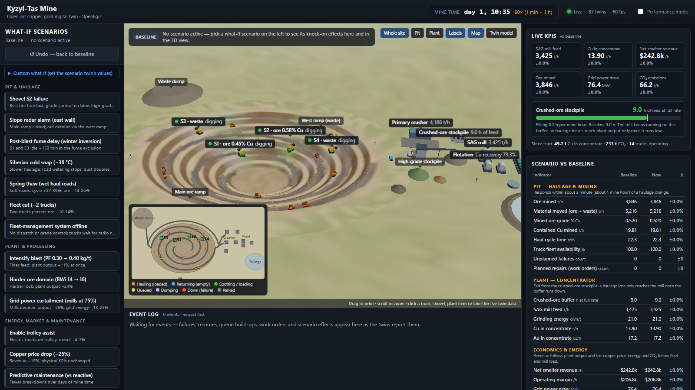
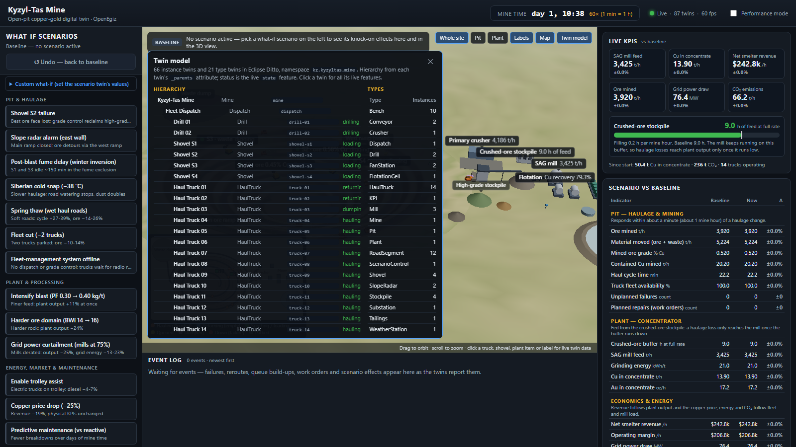
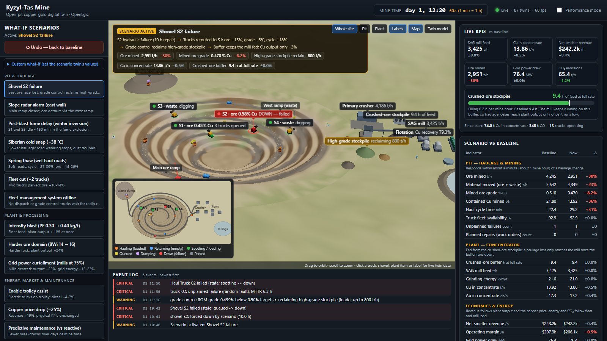
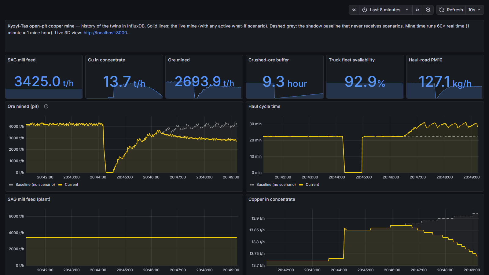

Fictional open-pit Cu-Au mine with a 30 Mt/a concentrator, parametrised from public data for Kazakhstan's Bozshakol and Aktogay operations. Every mine object is an Eclipse Ditto twin; a physics-based engine drives them over MQTT; a 3D interface reads them back from the platform and runs what-if scenarios.

Start (clean Ubuntu with Docker):
sudo apt-get update && sudo apt-get install -y makemake up
Openhttp://localhost:8000 - 3D mine, no login
http://localhost:3000 - Grafana: mine dashboard; OpenEgiz Twins/Types (login printed by make up)
87 twins · 13 what-if scenarios with Undo · 4 modules · shadow baseline
Plant capacities, fleet types, power and climate: KAZ Minerals reports and presentations [S1-S5];
equipment specifications [S11-S14]. Full sourced parameter set: mine/docs/03_domain.md.
Twin baseline vs reference (1,000 mine hours, seed 3, tools/validate.py)
| Quantity | Twin | Reference |
|---|---|---|
| Mill feed (with mill outages) | 3,245 t/h (28.4 Mt/a) | 30 Mt/a design |
| Copper recovery | 79.4 % | 79.7 % (2020) |
| Cu in concentrate per tonne milled | 4.10 kg/t | 4.04 kg/t (2020) |
| Truck fleet availability | 92.6 % | 88-92 % target |
| Haul cycle | 24 min | ~22 min (fleet plan) |
| Unplanned failures / week | 24 | from all-causes MTBF |
mine-ui (nginx + React/three.js) reads the twins from Ditto - REST for the catalogue, server-sent events for live changes - and history from InfluxDB. Its nginx adds the platform credentials server-side, so the browser needs no login.
What-if path: the interface writes PATCH .../things/kz.kyzyltas.mine:scenario → Ditto publishes the change
on MQTT → the engine applies it → effects return through the equipment twins and the kpi twin.
Started by one command. deploy/compose/mine.yml adds mine-setup (creates the twins),
mine-engine and mine-ui; the Makefile always loads it, so make up starts platform and mine together.
Platform fixes made for a clean Ubuntu VM: LF line endings, Telegraf topic filter and no per-command tags (series explosion), mine port in env/preflight/smoke, anonymous read-only Grafana, provisioned mine dashboard.
The first start downloads about 2.5 GB of images (several minutes); later starts take about a minute.
make smoke checks the whole chain end to end.

definition; type twins hold instance counts and the feature names and units._parents: mine → pit → benches, radars; mine → dispatch → trucks, shovels, drills;
mine → plant → crusher, conveyors, mills, flotation, tailings, stockpiles.feeds: shovels → ROM pad → crusher → stockpile → SAG → ball mills → flotation → tailings;
the substation feeds the plant. Shovels name their bench.assigned_shovel and road_segment, road closed, grade-control reclaim_tph.See it: Twin model button in the 3D view (no login), or Grafana → OpenEgiz → Twins / Types.
| Process | Model |
|---|---|
| Truck travel | rimpull / grade resistance per segment; ramp, winter and visibility speed caps |
| Haul cycle | queue → spot → load (passes × swing) → haul → dump (2 bays) → return |
| Blasting | Kuz-Ram X50/X80 from powder factor |
| Grinding | SAG throughput from feed size, hardness (Axb), power and ball mills in service; Bond P80; power follows load |
| Flotation | constant-tails recovery with grind and residence penalties |
| Stockpiles | mass and grade balance (mass conserved): ROM, crushed, high-grade, waste |
| Reliability | Weibull wear-out with condition signal + random faults (all-causes MTBF) |
| Dust | US EPA AP-42 haul-road PM10; no watering below 0 °C |
| Energy, economics | diesel by class/phase, grid power, CO₂ (0.80 kg/kWh), net smelter revenue |
Interlinked. Trucks deliver ore at the grade of the face they loaded → ROM pad → crusher (plus high-grade ore when grade control asks) → 40 kt crushed-ore stockpile → SAG mill → flotation. Pit changes reach the plant only through the stockpiles - so haulage scenarios hit "ore mined" at once and plant output later.
Constraints and back-pressure: one truck under a shovel, two dump bays, winter speed caps, one ball mill down cuts grinding to 60 %, the crusher stops when the crushed pile is full and ore trucks wait when the ROM pad is full, closed ramp → 2.7 km detour, only electric trucks use the trolley line.
Shadow baseline: on every scenario click or Undo, a copy of the live mine (including random streams) continues without the scenario - the deltas measure that scenario only.

shovel-s2 forced down (hydraulics, 10 mine hours) - red in 3D and on the minimap.Undo - back to baseline: every scenario field returns to its default, S2 returns to service at once,
trucks are re-routed back, and the comparison restarts from zero.
| Scenario | What changes | First 2 mine hours (average) | Mine hours 2-10 |
|---|---|---|---|
| Shovel S2 failure | S2 down 10 mine h | ore −15 %, grade −5 %, cycle +18 % | ore −17 %; Cu output −3 % (buffer, grade control) |
| Slope radar alarm | main ore ramp closed | ore −16 %, cycle +19 % | ore −30 %, cycle +28 % |
| Post-blast fume delay | S1, S3 blocked ~150 min | ore −15 %, cycle +19 % | ore −6 %, recovering |
| Siberian cold snap (−38 °C) | temperature, wind | ore −5 %, cycle +9 % | ore −13 %; road PM10 ≈ ×2 |
| Spring thaw | rolling resistance +2.5 pts | ore −14 %, cycle +27 % | ore −26 %, cycle +39 % |
| Fleet cut (−2 trucks) | two ore trucks parked | ore −10 % | ore −14 % |
| Fleet-management system offline | fixed plan, no grade control | ≈ 0 % | ≈ 0 %; matters during failures (slide 8) |
| Intensify blast (PF 0.30 → 0.40) | powder factor ×1.33 | mill feed, Cu, revenue +11 % | same |
| Harder ore domain (BWi 14 → 16) | Bond Wi, Axb | mill feed, Cu, revenue −24 % | same; buffer +11 % |
| Grid power curtailment (mills at 75%) | SAG and ball mills at 75 % power | mill feed, Cu −25 % | grid energy −23 %, CO₂ −21 % |
| Enable trolley assist | 830E trucks on trolley | diesel −4 % | diesel −7 %, ore +5 % |
| Copper price drop (−25%) | Cu $10,900/t, TC/RC +$80 | revenue −19 % | revenue −19 % |
| Predictive maintenance | maintenance strategy | no change yet | fewer failures over days (slide 8) |
Averages against the shadow baseline (seed 3) from mine/engine/tools/measure_scenarios.py; random failures make the live stand vary.
Every scenario stays active until ↺ Undo - back to baseline. Custom what-if sets the scenario twin's values directly
(shovel out, trucks parked, crusher, powder factor, dispatch, temperature, ore hardness, mill power, road condition, copper price).
Dispatch - Haulage and Dispatch
Sends each empty truck to the eligible shovel with the shortest queue; skips broken, closed-off or fume-blocked shovels. Offline, trucks of a broken shovel idle ~30 min until a radio reassignment. With dispatch and grade control, an S2 failure costs −23 % ore and −2.8 % copper; offline −28 % and −6.6 % (mean of 8 runs).
Grade control - Geology and Ore Quality
When ROM ore falls below 0.50 % Cu, reclaims the 0.65 % high-grade pile into the crusher feed in the proportion that restores the target
(≤ 800 t/h). Seen in stockpile-hg.reclaim_tph and "grade control" events.
Predictive maintenance - Equipment Reliability
Health and hours to wear-out are estimated from coolant and oil-iron signals; work orders bring trucks in at the next shift change instead of failing in service. Over 200 mine hours (8 runs): unplanned failures −23 % (191 vs 249); availability about equal, since planned repairs also take trucks out.
Energy and CO₂ - Energy
Accounting, not a control decision: diesel by truck class and phase, grid power for crushing, grinding and trolley lines, cost and CO₂ at 0.80 kg/kWh. Trolley assist (two electric 830E trucks): diesel −4...−7 %, CO₂ about unchanged on the coal-heavy grid (break-even ≈ 0.64 kg/kWh).

mine/docs/03_domain.md §12.Limitations
Verification: 58 engine tests (physics vs worked examples, mass balance, scenario directions, Undo,
baseline copy, mill circuit, dispatch, twin/engine contract); tools/measure_scenarios.py and
tools/validate.py reproduce every number here; make smoke checks the running stack.